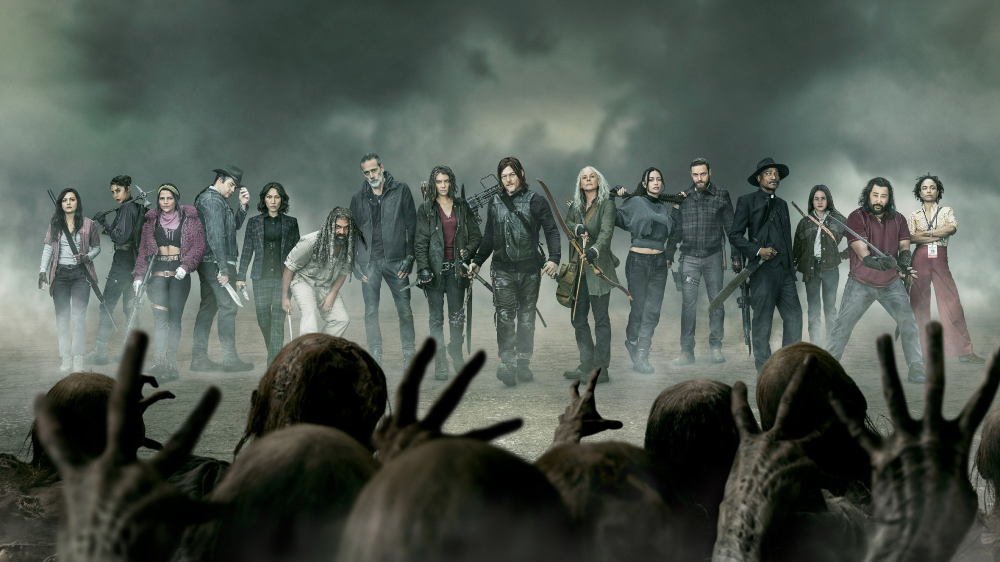
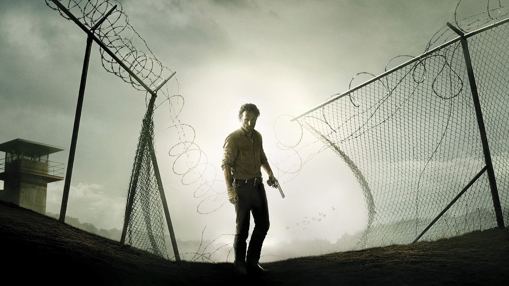
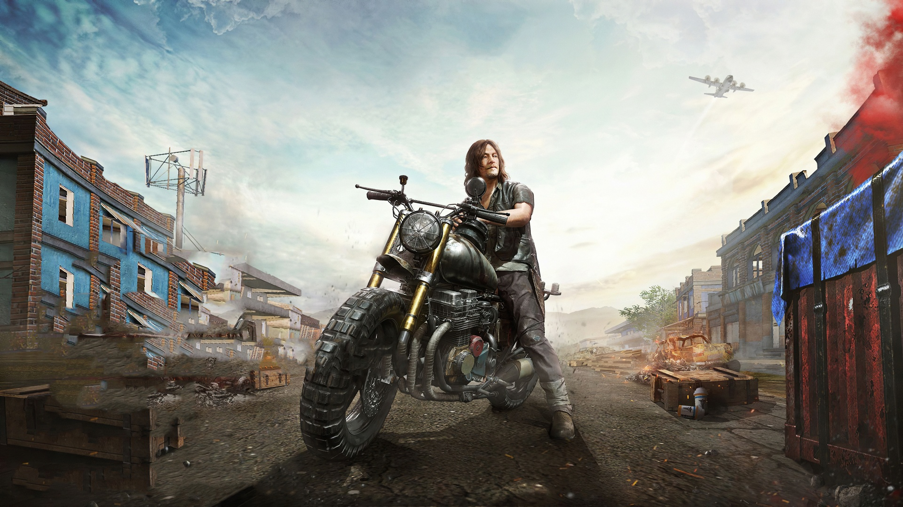
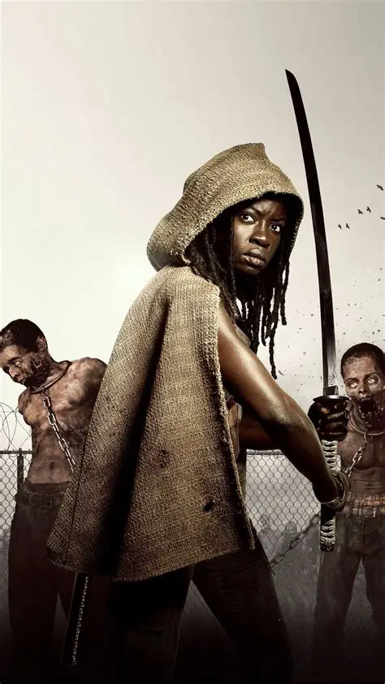
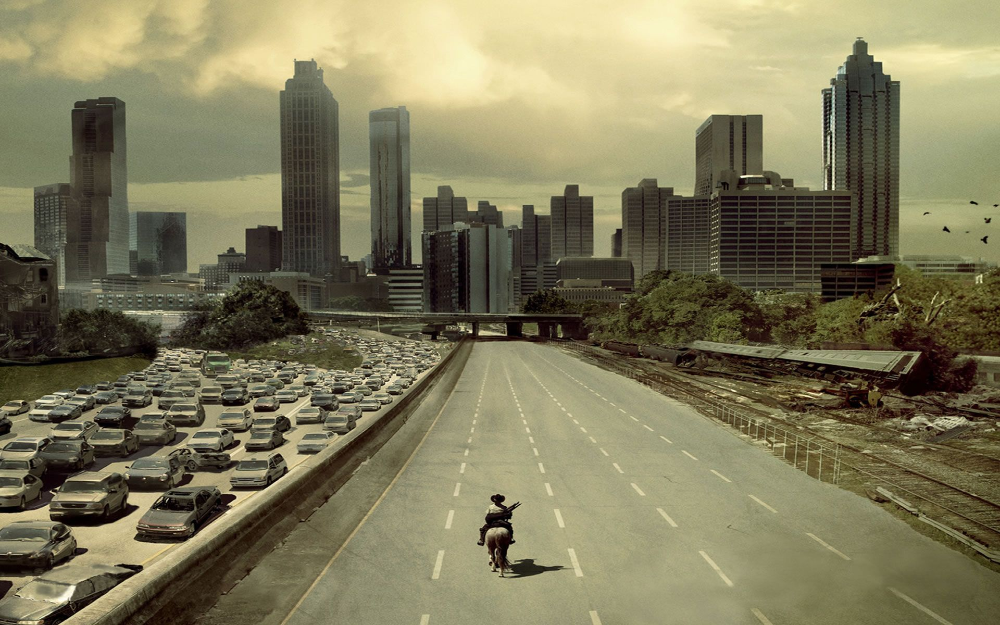

The People Who Matter
THE
GROUP
STRONGER TOGETHER
Strangers bound by survival. Each carries scars the world gave them. None of them chose this — but all of them showed up.
Together, they are the Last Survivors.

The People Who Matter
Strangers bound by survival. Each carries scars the world gave them. None of them chose this — but all of them showed up.
Together, they are the Last Survivors.
Eleven souls. One purpose. Zero compromise.
Former sheriff's deputy. Woke up to a world already lost and chose to lead anyway. His moral code bends — it never breaks.
Crossbow. Motorcycle. No past worth speaking of. The wilderness is his language; the group is his only family.
She arrived alone, blade already red. Silence was her armor. The group became her reason to finally let it down.
Raised on a farm that became a graveyard. She learned medicine, leadership, and grief in equal measure.

R King CountyRick Grimes emerged from a hospital coma into a world that had moved on without him. Armed with training, instinct, and an unshakeable belief that people are worth saving, he built a group from strangers. His greatest strength and greatest flaw are the same thing: he cares too much to let go.

D Merle's BrotherRaised rough, discarded early, and underestimated always. Daryl turned a life of neglect into an unmatched survival skill set. He speaks in actions, not words — and his actions are usually the ones that keep everyone else alive through another night.

M The SwordBefore the world fell she was a law student. After it, she became something the world had never seen: a woman forged entirely from loss, moving through the apocalypse with a katana and two chained walkers as camouflage. She is proof that grief, channeled correctly, becomes armor.
"We've all done the worst kinds of things just to stay alive. But we can still come back."— Daryl Dixon
